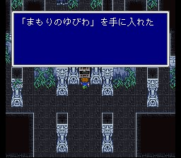

고도의 신전
제1세계에서 바다 한가운데에 떠 있던 작은 섬, 그리고 그 위의 정체불명의 건물을 기억하시는지요? 바로 이것이 고도의 신전으로, 세계가 합쳐지면서 빅브리지 위에 떠올라 가는 것이 가능해졌습니다.
들어가 보면 역시 가고일이 지키고 있는데 가볍게 레벨3프레아로 밟아 주시고.. 역시 좋은 아이템들이 있습니다. 오와조랄에게서 미라쥬베스트를 훔칠 수 있고, 토트에이비스에게 에이비스킬러를 얻을 수 있습니다. 이것은 에이비스란 이름을 가진 적에게 무조건 크리티컬을 입히는 특이한 무기입니다.
하이포션과 프로테스드링크는 별 거 아닌 아이템들이지만, FF5에서 가장 놓치기 쉬운 것들입니다. 상자회수율 100%를 위해서 얻어 놓읍시다.
이제부터는 석판을 지키는 보스들이 있습니다. 제2석판을 얻어가려 하면 스토커가 나타납니다. 똑같이 생긴 놈이 넷이 있는데, 이 중 하나만 진짜고 나머지는 허상이며 진짜의 위치는 수시로 바뀝니다. 전체공격으로 일관하면 반격이 거세니 조급해하지 말고 한 마리씩 때립시다. 정 신경쓰인다면 강제세이브를 이용하면 쉽게 깰 수 있습니다. (때려놓고 허상이면 강제로드..) 마인드블래스트를 쓰니 배워 둡시다.
제2석판을 얻으면 최강 백,흑마법이 있는 포크타워의 봉인이 풀립니다.